8X8X8 光立方制作流程
学完最基础的 8051 单片机后，我开始着手制作这个光立方。从电路原理到 PCB，从焊接组装到程序编写，本文作一个记录。
概述
我在制作光立方的过程中，大致经历了以下步骤：
- 确定要采用的基本电路原理，用 Proteus 画出仿真电路进行模拟；
- 使用 Altium Designer 绘制 PCB 电路板，确定需要使用的电子元件；
- 采购元件、工具，定做 PCB 板；
- 材料到手后，开始焊接电路板，焊接 LED；
- 测试焊接完成后的电路是否有效和可靠；
- 编写光立方驱动程序，编写动画；
- 使用 Python + Qt5 写了一个简单的光立方取模软件，Patternflow；
其中比较煎熬的步骤：
- 焊接 512 个 LED；
- 编写驱动程序初期 debug；
- 编写动画；
使用到的工具有：
- 电烙铁（包括焊锡、松香等）
- 万用表
- 镊子、剥线钳、水口钳等
- Keil C51
- Proteus
- Altium Designer
所有文件（包括原理图、仿真、PCB、驱动程序、取模软件）都开源：cube8 - Github。
电路原理
我采用 ULN2803 + 74HC573 + STC89C516RD+ 的原理，共阴极方式。512 个 LED 划分为 8 页（page），每页划分为 8 行（row），每行 8 个 LED 共阴极，行与行之间每个 LED 的阳极对应相连，由此得到一页。每页分别有 8 个阳极和 8 个阴极引出，页与页之间阴极对应相连，由此得到 8X8X8 立方体。立方体底部共有 64 个阳极，侧面共有 8 个阴极。
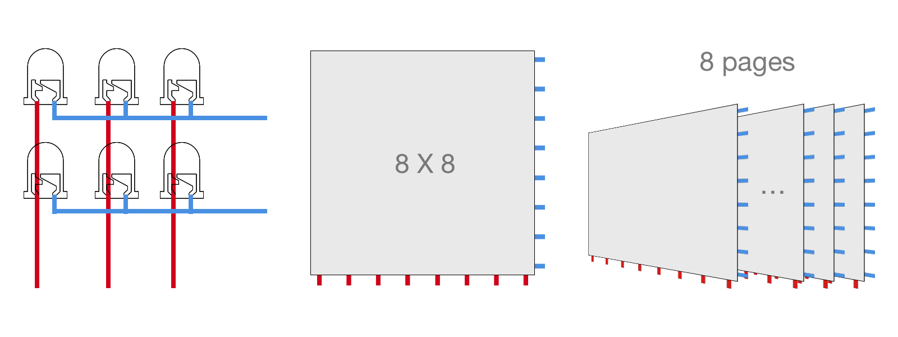
侧面的 8 个阴极与 ULN2803 的八个输出引脚连接，ULN2803 能够支持较大的灌电流输入。底部 8 行共 64 个阳极与 8 个 74HC573 并行锁存器的引脚连接。需要注意的是阳极和 74HC573 之间需要串联限流电阻，不然很容易将 LED 灯烧坏。以下分别是电路原理图和仿真图：
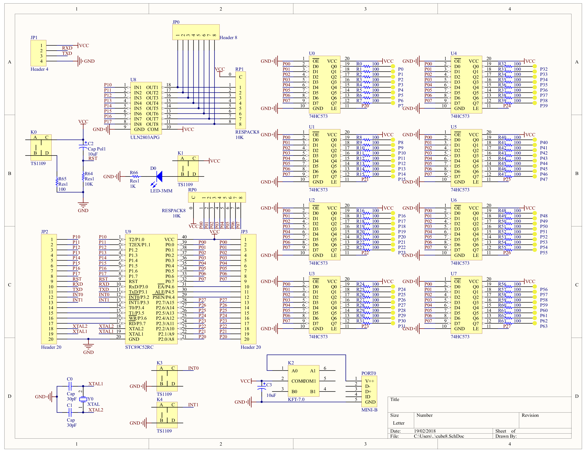
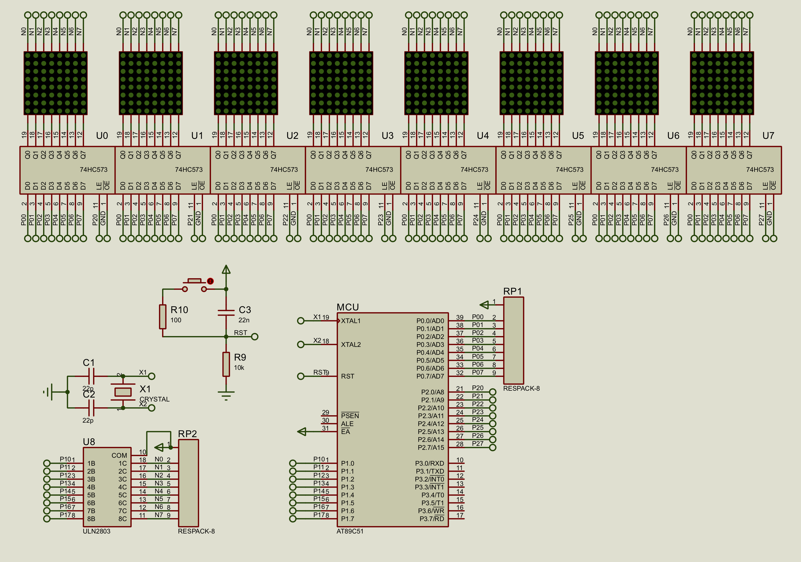
直插式 LED 工作电流一般在 20 mA 左右，工作电压 2 - 3 V，锁存器输出电压 5 V 左右，大致估算限流电阻为 125 欧姆左右。实际情况下，都是层扫描显示，每个 LED 点亮时间极短，电阻可再适当调小。我使用 100 欧姆的限流电阻，测试后发现合适。
材料准备
确定好电路原理图，就开始准备采购元件和工具了。以下是 BOM 清单：
| Comment | Description | Value | Quantity |
|---|---|---|---|
| 瓷片电容 | 晶振电容 | 30 pF | 2 |
| 电解电容 | / | 10 uF | 2 |
| LED (3 mm) | 电源指示灯 | / | 1 |
| 8P 排针 | 8 层共阴极 | / | 1 |
| 4P 排针 | 串行口 | / | 1 |
| 20P 排针 | 单片机引脚 | / | 2 |
| 1P 排母 | 64 个共阳极 | / | 64 |
| 6x6 轻触开关 | / | TS-1109 | 4 |
| 7x7 自锁开关 | 电源开关 | KFT-7.0 | 1 |
| MINI-B 母座 | 电源接口 | MINI-B | 1 |
| 1⁄4 金属膜电阻 | 电源指示灯限流电阻 | 1 K | 1 |
| 1⁄4 金属膜电阻 | 限流电阻 | 100 Ω | 65 |
| 9P 排阻 | 上拉电阻 | 10 K | 2 |
| 74HC573 | 阳极锁存 | DIP20 | 8 |
| ULN2803APG | 阴极灌电流 | DIP18 | 1 |
| STC89C516RD+ | 单片机 | DIP40 | 1 |
| 晶振 | / | 10 MHz | 1 |
| 20P IC 插座 | 74HC573 | / | 8 |
| 18P IC 插座 | ULN2803APG | / | 1 |
| 40P IC 插座 | STC89C516RD+ | / | 1 |
| 晶振插座（3P 排母） | / | / | 1 |
| LED | / | 5 mm | 512 |
| 母对母杜邦线 | 连接共阴极和 ULN2803 | / | 8 |
| MINI-B 数据线 | / | / | 1 |
| PL2303 烧录器 | 烧录单片机 | / | 1 |
之后绘制 PCB 板，交给某宝商家制作：
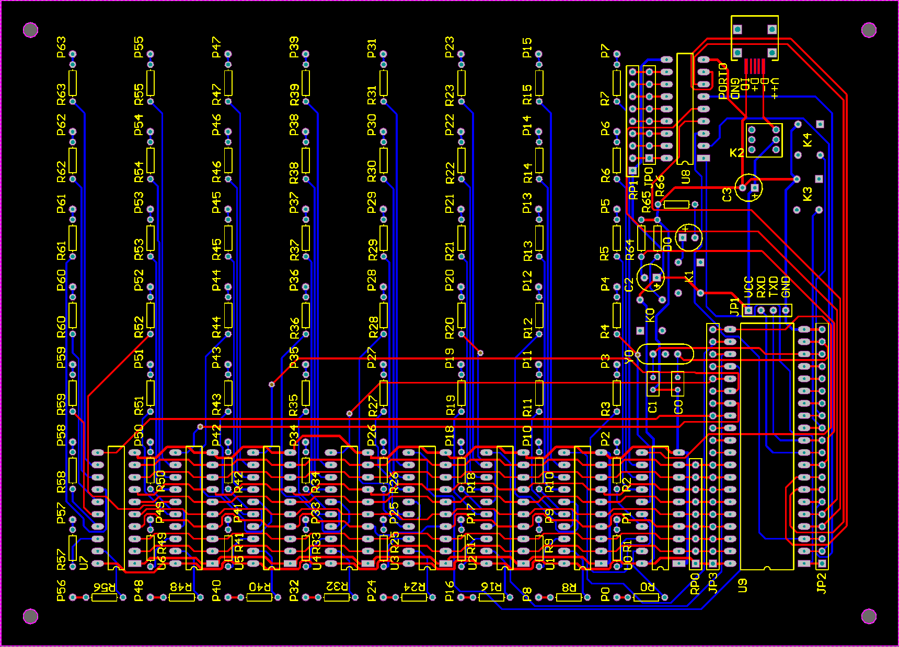
人生第二次画 PCB，心里还是挺忐忑的，毕竟板子不便宜，提交前检查了好几遍，没想到还是出了错误。画自锁开关的时候一时没找到原理图，想当然就开始画，结果自然是出错。还好只是开关引脚顺序的问题，用飞线补救回来了。写本文的时候已经修复了电路图里的这个错误。
焊接
焊接 LED 真是一个非常煎熬的过程，除了数量多之外，还得保证 LED 之间的距离保持基本不变，否则最后得到的立方体恐怕是歪歪扭扭的。
焊接的时候也有点小技巧。每个 LED 都要把阴极弯折 90 度。第一步，将 8 个 LED 的阴极焊接在一起，形成一行。我是利用 PCB 板上的孔洞，将 LED 阳极分别插入 8 个孔，这样既保证了 LED 之间的距离相等，也保证了 LED 与 PCB 的匹配。为了避免损坏 PCB，垫了一张纸。排列好后，焊接起来非常方便。
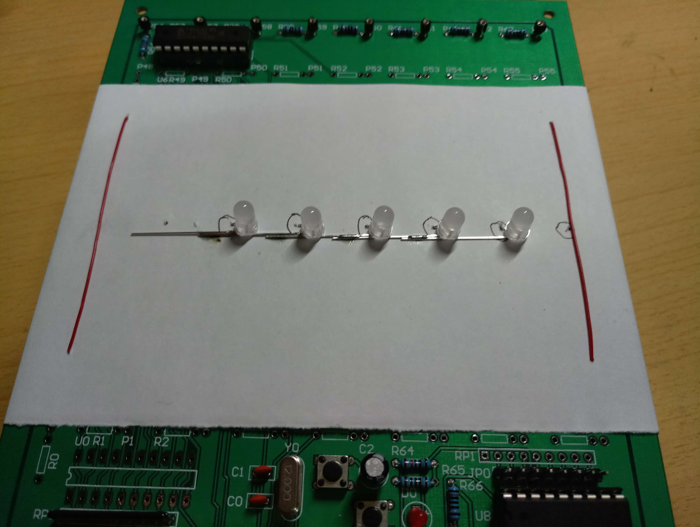
将 64 行全部焊完，并测试能否点亮之后，就可以焊接页了。本来想用硬纸板做一个模板来固定，但是当时找不出啥可用的材料。索性在桌面上贴了一块胶布，在上面画两条平行的线段，作为行与行之间间距的标准。用镊子夹住两行的引脚进行焊接，焊接完两端，距离也就定下了。
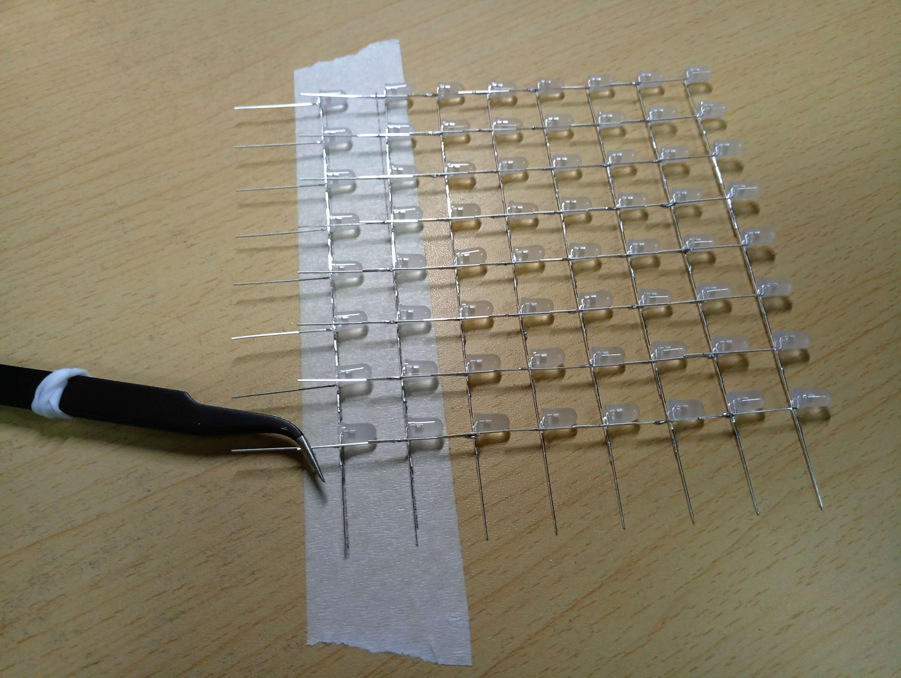
每个页面焊接完成后都要进行测试：
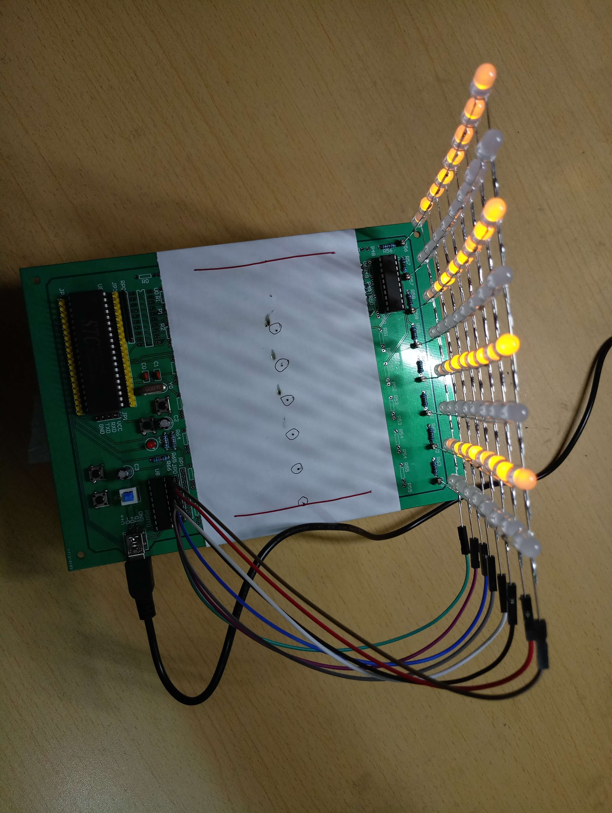
最后来个 8 页合影：
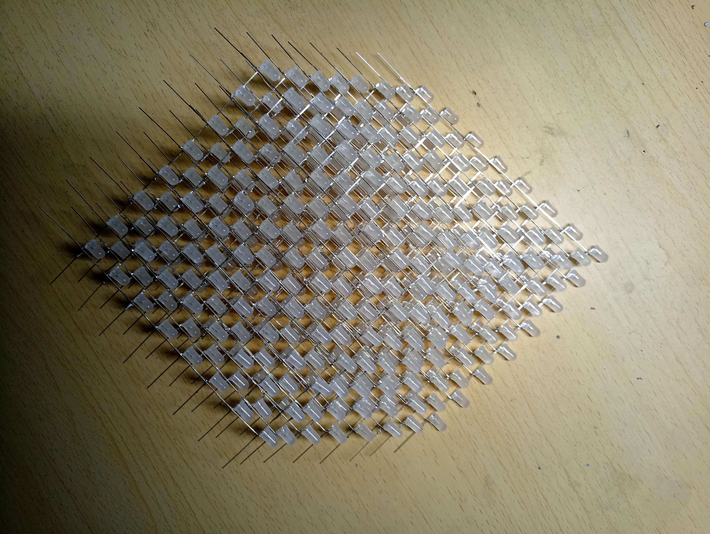
其他部份的焊接就不说了。
全部完成后的照片：
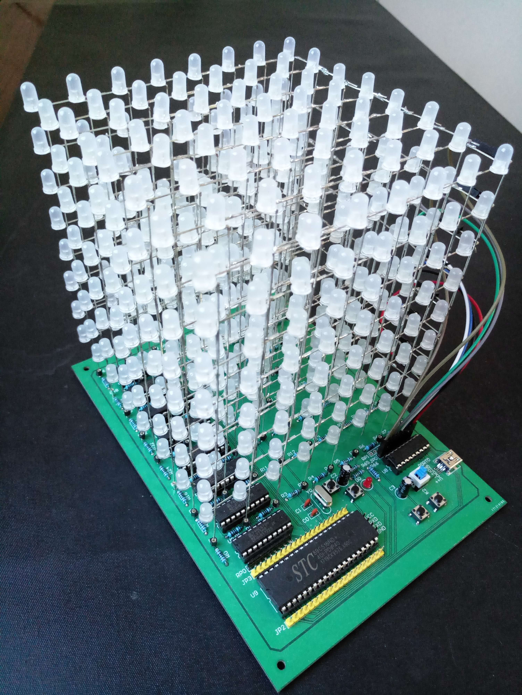
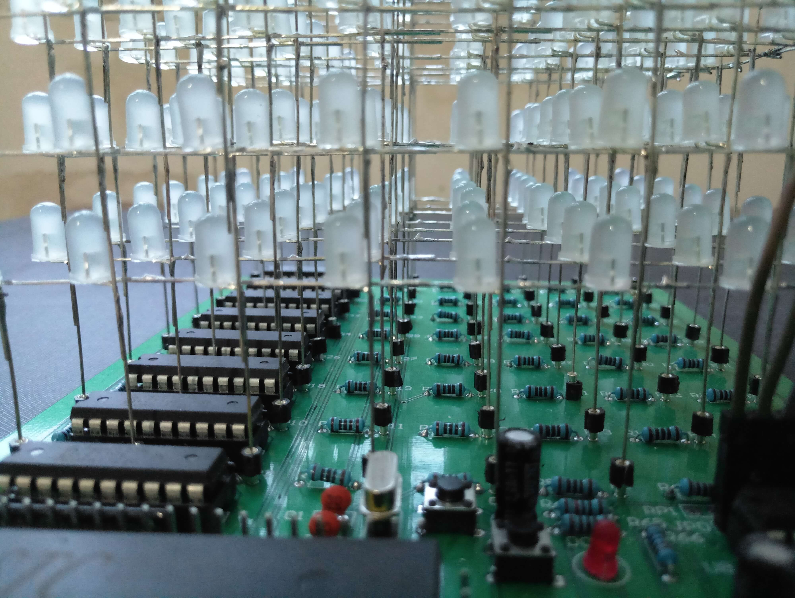
程序编写
点亮 512 个 LED 的时候，心里特激动。终于可以开始编写程序了。程序的原理还算简单。通过 8 个 74HC573 锁存器向光立方输出 64 个电平信号，通过 ULN2803 的 8 个引脚控制哪一层的 64 个 LED 能生效。显示完一层后，延时，显示下一层。一层一层不断循环，人眼看起来就像是 512 个 LED 同时在起作用。这就是最基本、最核心的显示函数。
我先写驱动函数，各种动画只要调用这些函数就可以实现了。大致写了以下函数：
// 扫描显示函数。将接收的矩阵一层层显示出来
void display(uchar *pattern)
// 全亮、全灭
void cube(bit status);
// 实心长方体显示函数
void box(uchar x0, uchar y0, uchar z0, uchar x1, uchar y1, uchar z1, bit status);
// 点显示函数
void dot(uchar x, uchar y, uchar z, bit status);
// 行显示函数
void linex(uchar y, uchar z, uchar line);
void liney(uchar x, uchar z, uchar line);
void linez(uchar x, uchar y, uchar line);
// 面显示函数
void surfacexy(uchar z, bit status);
void surfaceyz(uchar x, bit status);
void surfacexz(uchar y, bit status);
// 整体平移函数
void shift_x(char step, bit patch);
void shift_y(char step, bit patch);
void shift_z(char step, bit patch);
// 整体循环移位函数
void circshift_x(char step);
void circshift_y(bit direction);
void circshift_z(bit direction);
// 空心长方体显示
void frame(uchar x0, uchar y0, uchar z0, uchar x1, uchar y1, uchar z1);
最后就是写动画啦。这是件需要创意的事情，要想做得炫酷新奇着实不容易。我当时趁着热劲还没消退写了 1 分多钟的动画，本想这几天继续下去，但一个多月过后真的没有啥心力再写下去了。动画就不献丑了，不过代码都在。
Patternflow
等材料送达那几天，闲着没事写了一个取模软件，用 Python 和 Qt5 写的，macOS、Windows 上都能用。基本功能也就是：
- 点、行、列、页点亮或熄灭
- 输出十进制、十六进制格式
- 从代码 restore 图案
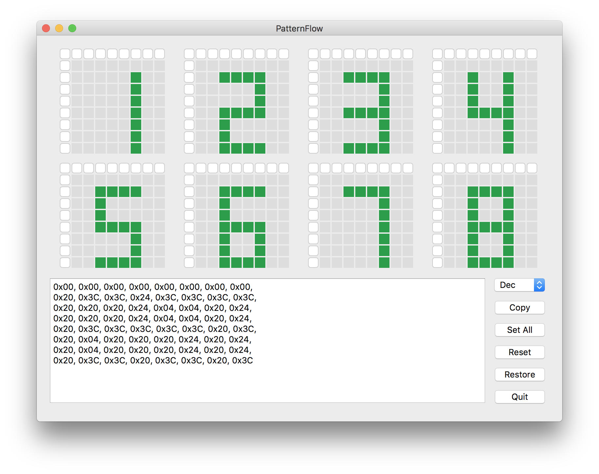